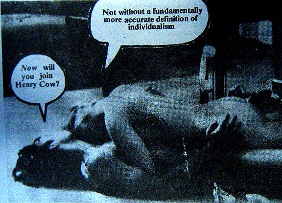

Thursday, August the 13th, 2009
back to: title, date or indexes
Mooching about Interwebshire*, it is easy to forget those long ago days spent in the seedy village of Inksmudge. Although there are umpteen websites devoted to all sorts of past publishing glories, it is rare—at least in my experience—to chance upon an item I clearly remember snipping out of an old inky paper and slotting in to my teenage cuttings pile. (Why did I never bother to paste things into a scrapbook?)
Those heaps of printstuff were, for the most part, lost or abandoned or buried or burned to a cinder many years ago. So I was delighted, this morning, roaming through the shire, to find this snippet, almost certainly from NME circa 1974. It still makes me laugh, though perhaps now accompanied by a lump in my throat. Tempus fugit, lost youth, blah blah blah…

* NOTE : A term coined, as far as I'm aware, by John Barleycorn at the much-missed According To The Ninth.